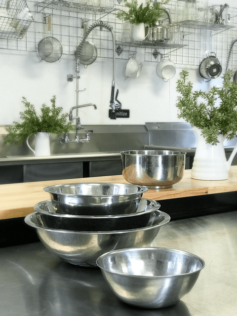
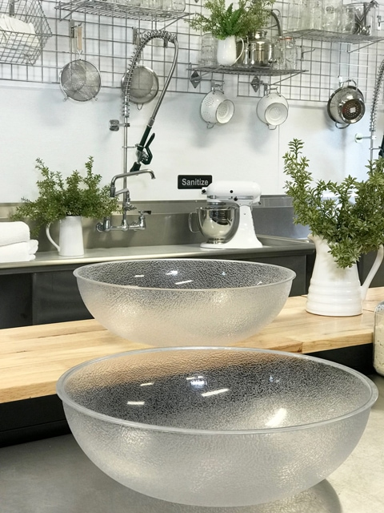
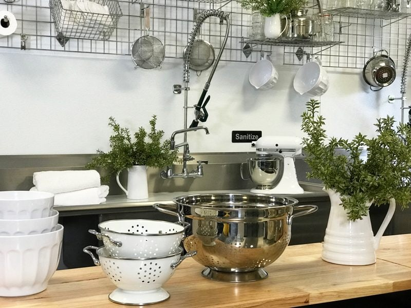

Bowls and Strainers
I am sure that you all have a kitchen cabinet overflowing with bowls, strainers, and colanders. If you do, maybe this a good time to go through them. Reorganize, get rid of ones that are chipped, broken, or wobbly. But if you don’t have some nice functional bowls, you are in the right place. I wanted to share with you what I use and why. Building a kitchen with effective tools sets us up for success, and that is my heart for you. So, with that being said, let’s talk bowls.

Stainless Steel or Glass Bowls
I can never have too many bowls. I prefer stainless steel and glass bowls. I never use plastic except for one, and I will talk about that in a moment. So why have both? Frankly, you don’t have to. If you only have the budget or space for one type of bowl, I would aim for glass bowls. You can’t use stainless when culturing/fermenting foods.
Why Stainless Steel?
- They are lightweight.
- Nesting bowls are a must for me. The space-saving stackable design helps to de-clutter my kitchen cupboards.
- They are safe in the refrigerator, freezer, dishwasher, and the dehydrator.
- Many of them come with anti-slip bottoms, which I love.
- Stainless steel bowls tend to be deeper which is great when working with a lot of ingredients. Also, it prevents ingredients from creeping over the edges when whisking.
- They are non-porous and won’t warp, stain, or absorb odors.
- Stainless bowls are excellent conductors for melting raw cacao butter. They tend to hold the heat longer giving you a bit more time to play with the chocolate.
Why Glass?
- Glass bowls are timeless and can quickly go from the fridge to the dinner table.
- Just like stainless, I look for glass bowls that nest for storage space.
- For fermenting/culturing, you will only want to use glass bowls (no stainless or plastic).
- Look for heavy duty ones so they can withstand regular use.
- They are non-porous and won’t warp, stain, or absorb odors.
- Choose a glass that will withstand going into the freezer and dehydrator.
Kale Chip Bowl

I have been making kale chips since 2008. One of the main issues that I always ran into was the fact that the kale kept falling over the edges of the bowl while I attempted to massage the sauce into the leaves.
One day, Bob and I found ourselves in a restaurant supply store. (heaven!) The moment that my eyes fell upon the bowl in the photo, I was in love. I instantly knew that we were going to be friends.
This bowl measures 15″ in diameter and is very sturdy. For starters, it is perfect when it comes to making kale chips. It allows me to make a hefty batch, keeping ALL the kale and sauce in the bowl as I massage it all together. Love that!
The second application that I use it for is when I make raw sauerkraut. As you may or may not know, it takes a lot of shredded cabbage to make a batch of kraut. It shrinks by 50% in volume. But, at first, when you start to massage the cabbage to break it down, it requires a BIG bowl. This bowl can handle ALL my kraut making without any of it spilling over the edges.
This bowl can also double as a snow sled. Don’t ask me how I know, (looks sheepish as I dodge eye contact). The link that I provided below is for four bowls. If you don’t need four of them, see if a friend or two wants to go in on the deal! They do take up some real estate space in your kitchen, so keep that in mind. This bowl is worth every penny.

Strainers & Colanders
Strainers and colanders are a must in my kitchen. I use them regularly, for many different reasons. But there isn’t just one size fits all. Strainers come in many different shapes and sizes. For instance, smaller ones are perfect for dusting desserts with cacao or for rinsing grains and seeds. The size and mesh hole size all depend on the foods that you are using. I have even used mesh strainers to sprout seeds in.
Stainers come in stainless steel and plastic. I have a set of both. The only time I use plastic is when I am culturing nut/seed cheeses or dealing with kefir grains. You don’t want to use stainless in this case as it interferes with the cultures. Store mesh strainers in a drawer where they won’t get crushed or better yet hang them up on a hook out of harm’s way.
I use colanders for larger jobs such as cleaning and rinsing fruits, veggies, nuts, larger seeds, and grains. So as you can see, in time you will want to have a small collection of different ones so you can get each job done.
Why Fine Mesh Stainless Strainers?
- Stainless strainers are more durable than plastic.
- They tend to be handheld which is perfect for dusting raw cacao on top of desserts.
- Great for sifting and straining wet or dry ingredients.
- Most are dishwasher safe. Check the brand.
- They come in many different sizes so you can handle everything from a large job to a small, more detailed job.
- Perfect for rinsing small batches of nuts, seeds, and grains.
- Do not use with recipes where you are fermenting.
Why Plastic Mesh Strainers?
- Plastic mesh strainers can typically handle the same jobs as the stainless, but I find them a bit more “fragile” due to the softness of the material.
- GREAT for using when fermenting/culturing recipes.
- Not dishwasher safe.
- They come in many different sizes so you can handle everything from a large job to a small, more detailed job.
- Not suitable for hot food or liquid prep.
Why Free Standing Stainless Mesh Strainers?
- With a sturdy base, it sits on countertops and sinks comfortably.
- Very durable and long-lasting.
- Can handle the rinsing task of larger quantities of nuts, larger seeds, and oats.
- These strainers have larger holes than the handheld strainers but smaller holes than colanders.
Why a Colander?
- They have well-placed holes for easy draining.
- Suitable for both hot and cold prep.
- When not using as a colander, try it out as a fruit basket, it will look great on your counter.
- They come in all shapes, sizes, and colors.
- Great for washing and rinsing produce.
Let’s Go Shopping
Bowls
Stainless Steel Bowls
Glass Bowl
Kale Chip Bowl
Strainers
Strainers for nuts, seeds, grains, blender juicing, etc.
Strainers for culturing/fermenting
Large Strainers for fruits and veggies
© AmieSue.com